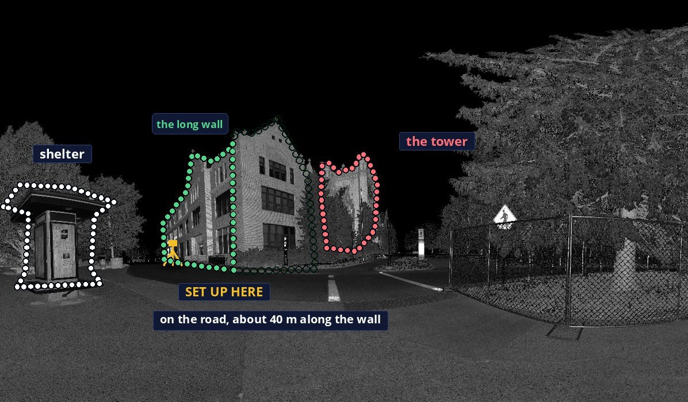
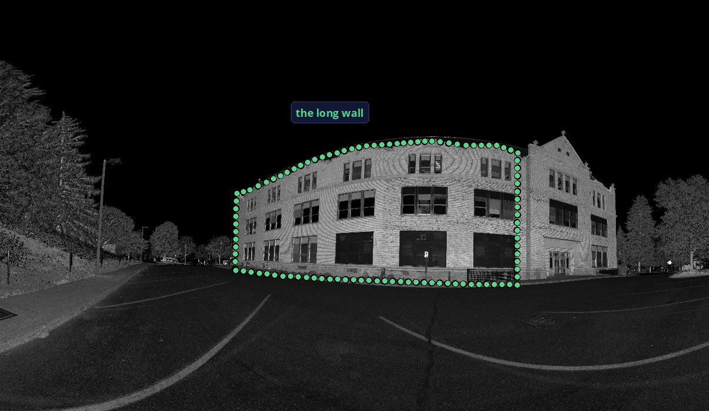

The visit
The long facade of the administration building at the University of Idaho.
Station 3, before the facade
Trees stand in front of the tower. The long wall is the face along the road.
Where to stand
On the road, about 40 m along the wall, past the shelter.

From that spot
Nothing stands in front of the wall.

The long facade
Is the long facade plumb, within a quarter inch in ten feet?
4.1 mm out of plumb (3/16 in) over 14.6 m. The top leans toward the side it was scanned from. The tolerance gives no allowance for 14.6 m of height. Flat to 7.6 mm RMS. Stations 3, 4, 5, and 6 saw it. The plane runs 44.4 m.